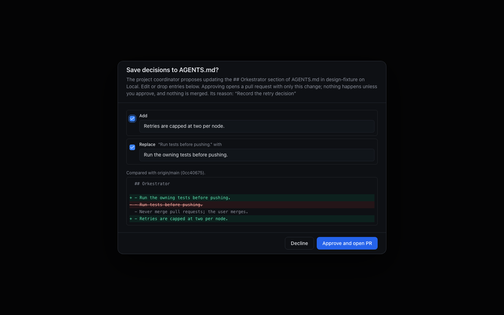
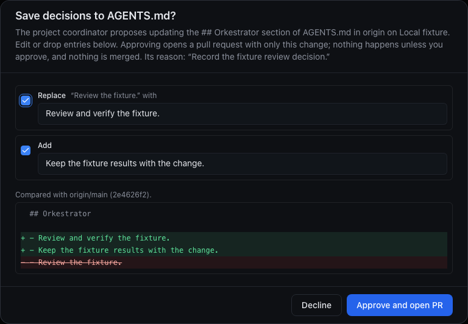
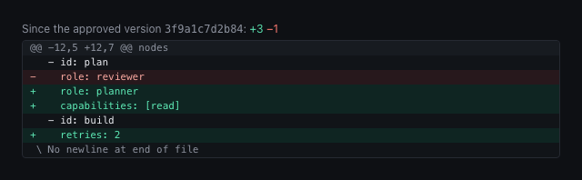
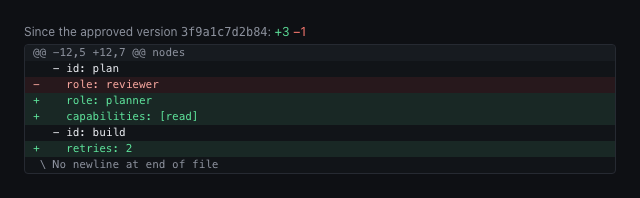
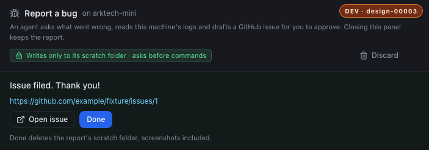
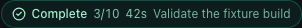
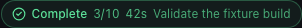

Design tasks / 00003
00003 · Replace hard-coded green and emerald classes with the success token
Problem
Success text appears as emerald-400 (31), emerald-300 (27),
green-500 (21), emerald-500 (16), green-400 (13) and
more. Diff additions in AgentsMdApprovalDialog.tsx:383 and
GraphTemplateReviewPanel.tsx:63 use emerald rather than
text-success, so the same diff line is a different green depending on the
screen.
emerald and other accent hues that distinguish
agent platforms in the model picker are identity, not status. Never use them to mean
success.
Find every instance
grep -rnE --include=*.tsx "(text|bg|border)-(green|emerald|lime)-[0-9]{2,3}" apps/web/src | grep -v "\.test\."Scope
| Where | What |
|---|---|
apps/web/src/components/federation/AgentsMdApprovalDialog.tsx:383 |
diff addition line |
apps/web/src/components/graph-designer/GraphTemplateReviewPanel.tsx:63
|
diff addition line |
apps/web/src/components/bug-report/BugReportSheet.tsx:401,660 |
success chip and band |
apps/web/src/components/browser/annotations/AnnotationThread.tsx:603
|
result block |
apps/web/src/components/build-pipeline/PipelineKeyInformation.tsx:339
|
chosen-option frame |
apps/web/src/components/build-pipeline/key-information-tab-sections.tsx:116,161
|
chosen-option frame and callout |
apps/web/src/components/chat/GoalPill.tsx:34 |
goal-complete frame |
apps/web/src/components/chat/MailTile.tsx:106 |
“Status: finished” frame |
apps/web/src/components/chat/AgentModelPicker.tsx:1061 |
Check: platform identity, probably keep |
apps/web/src/components/chat/rich/RichCallout.tsx:27 |
Check: callout kind hue, probably keep |
Approach
- Run the grep and classify each hit in Notes: success, identity (platform hue in the model picker) or kind (a callout or graph category).
-
Replace success hits with
text-success,border-success/NNandbg-success/NN. - Keep identity and kind hits, and write down in Notes why each stays.
- Check that diff additions read the same on the agents.md approval dialog, the graph template review and the file diff.
Required evidence: before and after
Every slot needs a before image (captured first, before editing any code) and an
after image. Use the same profile, fixture data, theme, viewport and zoom for both.
Save PNGs under design/images/00003/ using the exact file names shown. See
How to capture.
agents.md approval dialog with additions desktop 1440×900
Trigger an agents.md change approval in a fixture environment.


Graph template review panel desktop 1440×900
Open a graph template review with added lines.


Bug report sheet success state desktop 1440×900
Reach the success band in the bug report sheet (a fixture submission).

Goal pill in the complete state desktop 1440×900
Run a short goal to completion in a fixture session.


Out of scope
- Platform hues in the model picker.
- Status dots (task 00004).
Verification
mise run test:logged -- --name web-typecheck -- bun run --cwd apps/web typecheck
NODE_ENV=test mise run test:logged -- --name build-pipeline -- bun --cwd=apps/web test src/components/build-pipeline --parallel=2 --only-failures
mise run format:check
mise run lint
React tests in this repo need NODE_ENV=test in build shells. Real-browser
check: use a throwaway dev:test profile named design-00003, never
a production instance.
Acceptance checklist
-
Before images captured on unmodified code for every slot below, and committed
under
design/images/00003/. - After images captured after the change, with the same profile, data, theme, viewport and file names, and committed beside the before images.
- Every image slot on this page shows a picture (the evidence badge reads “8 / 8”).
- I have looked at each pair and written what changed, and anything that did not change that should have, in Notes.
- Hits were classified in Notes, and each decision below is recorded with the option chosen.
-
Type-check and the owning tests pass (commands below);
mise run format:checkandmise run lintpass. - The browser check includes a page reload and, for layout-affecting changes, the narrow viewport.
- DESIGN.md or PRODUCT.md updated if needed: None expected.
- Status set to Done on this page and in the index.
Notes
Fill in as you work: classification of each hit, the options chosen, what changed in each image pair, anything deferred.
-
Hit classification (158 raw hits in
.tsxplus 4 files in.ts; 118 lines in 84.tsxfiles and 2 lines inkey-information-format.tschanged):-
Success, replaced with
success: diff additions (agents.md dialog, graph template review, file diff), check icons and “passed”, “complete”, “resolved”, “enforced”, “in sync”, “connected”, “signed in” and “active” text, chosen option frames, goal complete (pill and tile), mail “finished”, bug report chip and band, annotation result and resolved, review strengths, thebg-success/10 text-green-300pairs in the flow graph, and light/dark pairs such astext-green-600 dark:text-green-400inPullRequestCheckStatus.tsx. -
Identity, kept:
AgentModelPicker.tsx,AgentIcons.tsx(Codex emerald, OpenCode green), the Codex icon inMcpSettings.tsx:599,usage-format.tsand the Input series inUsageSummary.tsx. These tell platforms apart (the Platform Hue Exception). -
Kind, kept:
RichCallout.tsx(callout kind),FileIcon.tsx(file type),ticket-label-style.tsandmachine-colors.ts(user-chosen label and machine colors),ComposerIconPicker.tsx(plan mode),GitHubIssueCard.tsx(GitHub's open-issue green). -
Action, kept: the green merge buttons in
MergePrDialog.tsx,ActionBar.view.tsxandAutoMergeToggleButton.tsx, the “Merge PR” icon inEnvironmentRow.tsxand the Allow button inClaudeTmuxChatTab.parts.tsx. They are call-to-action fills, not status. Whether they should become a primary action color is a separate decision. -
Status dots, left for task 00004:
StatusIndicator.tsx,TicketSyncStrip.tsx,KanbanBoard.tsx,KanbanCard.tsx:82,LinearIssueBoard.tsx,SuborkGroup.tsx,NodeSnapshotPreview.tsx,PreviewServicePicker.tsx,AgentInfoButton.panels.tsx,ClaudeTmuxChatTab.tsx,ServerConnectionSwitcher.tsx,PreviewSettings.tsx:53and the ping dot inGlobalSettings.sections.tsx.
-
Success, replaced with
-
Decisions chosen:
- Replace every success hit, not only the ten listed sites (recommended: the page's own Approach says to classify every hit, and a partial pass leaves the same diff line two greens). Alternative, ten sites only: smaller diff, but leaves about 100 raw greens.
-
Collapse the lighter shades used on tinted frames (
-200,-300) to plaintext-success(recommended: one pair rule). Alternative, a lighter success tint token: more control, but a second green. -
Keep the merge action buttons (recommended: out of scope, they are actions).
Alternative, move them to
bg-success: it would make an action look like a status.
-
What changed per image pair: the additions in the agents.md dialog and the graph
template review were two different greens (
emerald-300text on anemerald-500/10tint) and are nowrgb(94, 227, 155)on thesuccess/10tint in both (checked withgetComputedStyle). The graph header count “+3” and the goal pill, bug report chip and band moved fromemeraldto the same mint. Layout, spacing and text are unchanged. Removals now usetext-failurein both places after task 00002. -
How the images were captured (not the live app): none of the four states could be
reached safely in a fixture profile: the agents.md approval needs a coordinator proposal,
the bug report band needs a real GitHub issue to be filed, a goal needs a live agent run,
and the graph review needs a shared template. Each image shows the real component, with
the real stylesheet, in the
design-00003profile's renderer, on a throwaway harness page (since removed) fed representative props, and for the dialog a stubbed preview response. The after images were taken after a restart of the profile, because its Vite server does not pick up edits to existing files on this volume. No page reload or narrow viewport check was done, so the task stays In progress. -
Tests: updated class assertions in
AddProjectDialog.test.tsx,CoordinatorPanel.outcome.test.tsx,ActionBar.test.tsx,QuestionCard.test.tsxandMultiReviewFlowGraph.test.tsx. Not run: the full suite, and the guards stage ofmise run test:changedfails onHtmlFileTab.test.tsx,SelfImprovementProgress.test.tsxande2e/HtmlPreview.spec.ts, files this change does not touch.